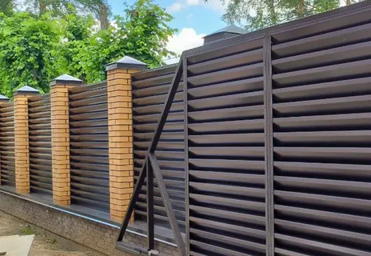

Ограждение участка и въездная группа
Заборы и ограждения в Калининграде
Монтируем заборы и ограждения для частных домов, коттеджей и участков. Работаем с профлистом, металлическим штакетником, 3D-сеткой и въездными воротами.
- Ограждение под ключ
- Ворота и калитки
- Для новых и существующих участков
Виды ограждений

Что влияет на стоимость
- Длина периметра и перепады участка.
- Тип заполнения и несущих столбов.
- Наличие ворот, калиток и автоматики.
- Подготовка основания и сопутствующие земляные работы.
Когда удобно заказывать вместе с другими работами
FAQ по заборам и ограждениям
Да, монтаж забора и ворот можно заказать как отдельную услугу.
Да, это один из самых удобных сценариев по срокам и логистике.
Да, подскажем вариант по бюджету, приватности и стилю участка.
Нужен забор или въездная группа
Опишите длину периметра, материал и задачу. Подготовим ориентир по стоимости и срокам монтажа.
Контакты
Оставьте заявку на забор, ворота или комплексное ограждение участка.
+7(921)618-23-77- Telegram: @CKcaizer
- Email: info@sk-kaizer.ru